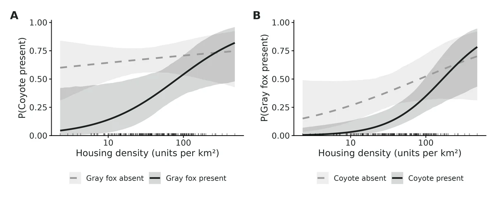
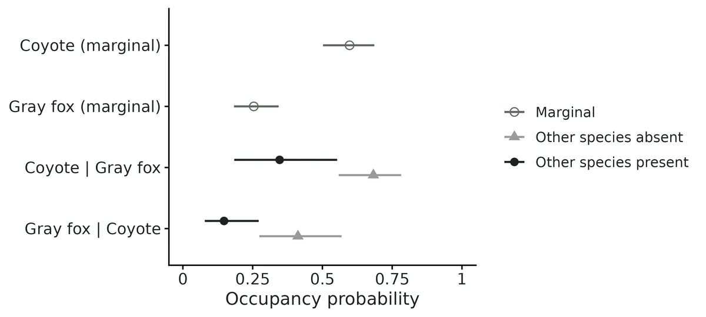
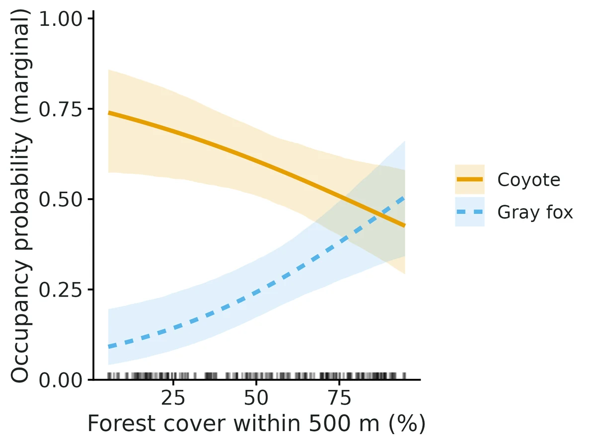
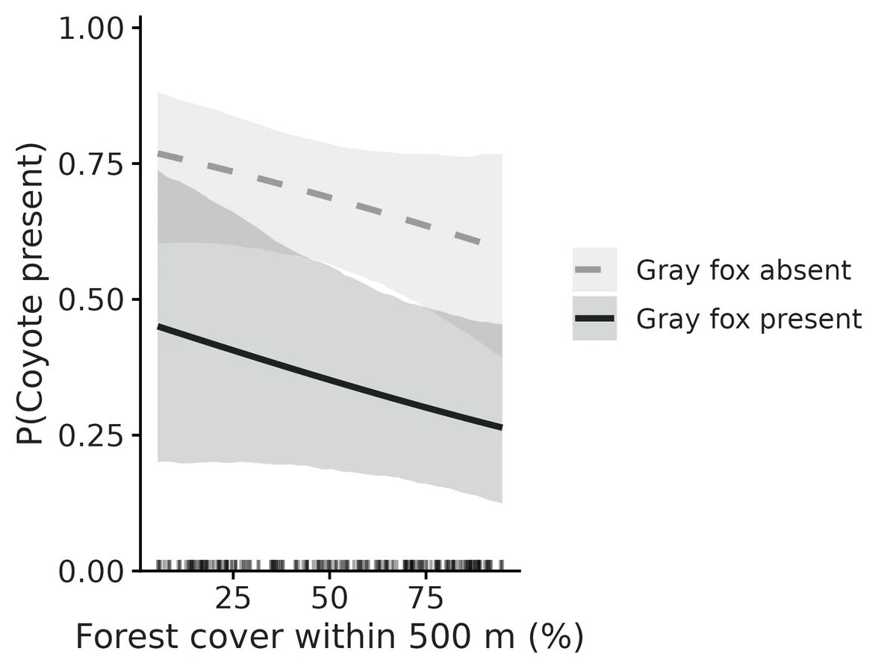

Multispecies occupancy with species interactions (Rota et al. 2016)
Do two or three species occur at the same sites more, or less, often than we would expect if they occurred independently, and does this change along a habitat or disturbance gradient, after allowing for each species being missed on some surveys?
Is this the right analysis?
Use it when
Detection/non-detection surveys of 2 or 3 species at the same sites (camera traps, call surveys, eDNA, point counts reduced to 0/1), repeated so detection can be estimated; question is whether the species occur together more or less than expected under independence, how one species' occupancy differs where another is present vs absent, and whether that association changes along a habitat or disturbance gradient.
Not for
One species (use occu-single); more than 3 species or whole communities (joint species distribution models / community occupancy); asymmetric dominant-subordinate questions where one species' occupancy is assumed to depend on the other but not vice versa (occu-waddle); counts or abundance; single survey per site; multi-season co-occurrence dynamics; spatially autocorrelated occupancy; proving competition or predation (co-occurrence is not interaction).
The data you need
Detection table (site x survey rows with one 0/1 column per species, or long site x survey x species), site covariate table, optional survey covariates (effort, days active, observer...).
What the example's main data file looks like:
| camera_id | week | start_date | days_active | coyote | gray_fox | bobcat |
|---|---|---|---|---|---|---|
| CAM-001 | 1 | 2024-06-03 | 7 | 1 | 0 | 0 |
| CAM-001 | 2 | 2024-06-10 | 5 | 1 | 0 | 0 |
| CAM-001 | 3 | 2024-06-17 | 7 | 0 | 0 | 0 |
| CAM-001 | 4 | 2024-06-24 | 7 | 0 | 0 | 0 |
| CAM-001 | 5 | 2024-07-01 | 7 | 1 | 0 | 0 |
Not sure? Use the finder to compare modules.
The worked example
Do gray foxes avoid coyotes, and does housing density change that? Multispecies occupancy with species interactions (Rota et al. 2016)
The question: Are gray foxes less likely to occupy camera sites where coyotes are present, and does that avoidance weaken with housing density, after allowing for imperfect detection and cameras that were down?
The data are simulated, so the true answer is known and the analysis can be checked against it.
What the researcher typed
I have camera-trap data from 220 stations, 6 weekly occasions in June-July 2024. The files are camera_detections.csv (one row per camera and week: days the camera worked, and 1/0 for coyote, gray fox and bobcat) and camera_sites.csv (forest cover within 500 m, housing units per km2, whether the camera is on a trail). Are gray foxes less likely to occupy sites where coyotes are present, and does that change with housing density? Please account for animals the cameras missed and for cameras that were down. Detection probably depends on days active and on whether the camera faces a trail. I need results and figures for a paper.
Run it yourself
Download the example data below and unzip it.
Open the unzipped folder in Claude Code (see Install).
Paste the prompt above. The agent checks the files, writes a plan, runs planted truth, fits the model and writes the report. You can compare your results with the ones below.
Contains camera_detections.csv, camera_sites.csv, the settings file (config.yaml), a description of the data and a step-by-step walkthrough.
Study design details
| species modelled | coyote, gray_fox |
|---|---|
| species in data | coyote, gray_fox, bobcat |
| n sites | 220 |
| n surveys | 6 |
| survey unit | camera-week |
| camera weeks surveyed | 1227 |
| camera weeks not surveyed | 93 |
| prop not surveyed | 0.0705 |
| occupancy formula | ~ forest_pct + log(housing_per_km2) |
| interaction formula | ~ log(housing_per_km2) |
| detection formula | ~ days_active + on_trail |
| engine | unmarked::occuMulti (maximum likelihood) |
Results from the example data

In plain language
- Allowing for missed detections, the estimated probability that each species occupies a site with average covariate values is: coyote 0.60 (95% CI 0.50 to 0.69); gray fox 0.25 (95% CI 0.18 to 0.34).
- At average covariate values, coyote and gray fox occur together less often than expected if they occurred independently (negative co-occurrence; this pattern alone does not show that one species avoids the other).
- Where coyote is present, gray fox occupies a site with probability 0.15 (95% CI 0.08 to 0.27); where coyote is absent, 0.41 (95% CI 0.27 to 0.57).
- The co-occurrence odds ratio is 0.25 (95% CI 0.09 to 0.66); a value of 1 would mean no association.
- The coyote-gray fox co-occurrence odds ratio is multiplied by 2.06 (95% CI 0.85 to 4.96) per 1 SD (0.984) increase in log(housing_per_km2), i.e. by 1.66 (95% CI 0.89 to 3.09) per doubling of housing_per_km2 (the interval includes 1, so the data do not show that the association changes along this gradient).
- At low housing_per_km2 (10th percentile), P(gray fox | coyote present) = 0.04 (95% CI 0.01 to 0.14) vs coyote absent 0.27 (95% CI 0.13 to 0.49); at high housing_per_km2 (90th percentile), 0.42 (95% CI 0.25 to 0.61) vs 0.55 (95% CI 0.32 to 0.77).
- Across the observed range of forest_pct (10th percentile 15.8 to 90th percentile 87), marginal occupancy changes: coyote from 0.71 (95% CI 0.57 to 0.83) to 0.46 (95% CI 0.34 to 0.59); gray fox from 0.12 (95% CI 0.06 to 0.22) to 0.46 (95% CI 0.32 to 0.59). This is an association, not necessarily a causal effect.
- Per-survey detection probability where the species is present (average survey conditions): coyote 0.23 (95% CI 0.18 to 0.29); gray fox 0.30 (95% CI 0.22 to 0.39). With 6 surveys, the chance of detecting a species at least once at an occupied site is coyote 0.80, gray fox 0.88.
- Caution: co-occurrence is not proof of a species interaction (Blanchet et al. 2020).
- Goodness of fit: no evidence of lack of fit (parametric bootstrap, p = 0.25, c-hat 1.12).
More figures



Figures are the module's default publication figures, reduced for the web. The report also saves them as PDF and full-resolution PNG.
Planted truth at the example's design
Before trusting the example's results, the module was run on many simulated data sets with the same design and known true values. Each row is one quantity: did the method get it back? (What the thresholds are.)
Every quantity checked passed planted truth at this design.
| This example | 220 camera sites, 6 weekly surveys, coyote and gray fox |
|---|---|
| Design the module was validated at | 400 sites, 4 surveys, 2 species |
The example has about half the sites of the validated default (220 vs 400), though more surveys per site. At this design the interaction slope was inflated by +10.3% in one recovery run and +3.9% in the other, consistent with the 10-13% inflation VALIDATION.md found at 400 sites. Power is low at about 200 sites (0.50 for the interaction, 0.24 for its slope), so a non-significant result is not evidence of no interaction.
These calls sit close to the pass/fail line. With another 400 simulated data sets they could come out the other way, so read them as “about at the limit” rather than as a clear pass or fail.
- p_gray_fox_beta_days_active (✓ PASS): bias +9.5% against an allowance of ±10.0% (set by the 10% rule), so it used 95% of the allowance.
38 of 38 rows pass; 1 is borderline.
Show the full recovery table (38 rows)
| Quantity | Check | True value | Average estimate | Bias | Allowed bias | Coverage (needed) | Result |
|---|---|---|---|---|---|---|---|
| cooccurrence_prob_coyote_gray_fox | standard check | 0.103 | 0.102 | -0.4% | ±10.0% | 0.97 (0.904) | ✓ PASS |
| detection_prob_coyote | standard check | 0.25 | 0.248 | -0.7% | ±10.0% | 0.93 (0.904) | ✓ PASS |
| detection_prob_gray_fox | standard check | 0.29 | 0.289 | -0.3% | ±10.0% | 0.95 (0.904) | ✓ PASS |
| interaction_coyote_gray_fox | standard check | -0.9 | -0.972 | -8.0% | ±11.0%† | 0.98 (0.904) | ✓ PASS |
| interaction_coyote_gray_fox_beta_forest (= log housing) | standard check | 0.6 | 0.662 | +10.3% | ±17.3%† | 0.95 (0.904) | ✓ PASS |
| occ_coyote_beta_forest (= log housing) | standard check | 0.17 | 0.171 | +0.6% | ±31.4%† | 0.95 (0.904) | ✓ PASS |
| occ_coyote_intercept | standard check | 0.49 | 0.531 | +8.4% | ±12.1%† | 0.95 (0.904) | ✓ PASS |
| occ_gray_fox_beta_forest (= log housing) | standard check | 0.3 | 0.299 | -0.3% | ±21.1%† | 0.98 (0.904) | ✓ PASS |
| occ_gray_fox_intercept | standard check | -0.6 | -0.581 | +3.1% | ±11.0%† | 0.96 (0.904) | ✓ PASS |
| occupancy_prob_coyote | standard check | 0.563 | 0.568 | +0.8% | ±10.0% | 0.95 (0.904) | ✓ PASS |
| occupancy_prob_gray_fox | standard check | 0.258 | 0.258 | +0.1% | ±10.0% | 0.95 (0.904) | ✓ PASS |
| p_coyote_beta_effort (= days active) | standard check | 0.31 | 0.319 | +2.9% | ±10.0% | 0.94 (0.904) | ✓ PASS |
| p_gray_fox_beta_effort (= days active) | standard check | 0.31 | 0.316 | +2.0% | ±10.0% | 0.94 (0.904) | ✓ PASS |
| prob_coyote_given_gray_fox_absent | standard check | 0.62 | 0.627 | +1.2% | ±10.0% | 0.94 (0.904) | ✓ PASS |
| prob_coyote_given_gray_fox_present | standard check | 0.399 | 0.395 | -0.9% | ±10.0% | 0.99 (0.904) | ✓ PASS |
| prob_gray_fox_given_coyote_absent | standard check | 0.354 | 0.362 | +2.1% | ±10.0% | 0.96 (0.904) | ✓ PASS |
| prob_gray_fox_given_coyote_present | standard check | 0.182 | 0.18 | -1.3% | ±10.0% | 0.98 (0.904) | ✓ PASS |
| cooccurrence_prob_coyote_gray_fox | full example model | 0.103 | 0.103 | +0.2% | ±10.0% | 0.96 (0.917) | ✓ PASS |
| detection_prob_coyote | full example model | 0.252 | 0.254 | +0.9% | ±10.0% | 0.93 (0.917) | ✓ PASS |
| detection_prob_gray_fox | full example model | 0.295 | 0.292 | -1.2% | ±10.0% | 0.94 (0.917) | ✓ PASS |
| interaction_coyote_gray_fox | full example model | -0.9 | -0.955 | -6.1% | ±10.0% | 0.95 (0.917) | ✓ PASS |
| interaction_coyote_gray_fox_beta_log_housing_per_km2 | full example model | 0.6 | 0.623 | +3.9% | ±11.5%† | 0.96 (0.917) | ✓ PASS |
| occ_coyote_beta_forest_pct | full example model | -0.243 | -0.258 | -5.8% | ±11.4%† | 0.96 (0.917) | ✓ PASS |
| occ_coyote_beta_log_housing_per_km2 | full example model | 0.169 | 0.168 | -0.2% | ±19.6%† | 0.96 (0.917) | ✓ PASS |
| occ_coyote_intercept | full example model | 0.49 | 0.525 | +7.2% | ±10.0% | 0.97 (0.917) | ✓ PASS |
| occ_gray_fox_beta_forest_pct | full example model | 0.7 | 0.721 | +3.0% | ±10.0% | 0.94 (0.917) | ✓ PASS |
| occ_gray_fox_beta_log_housing_per_km2 | full example model | 0.3 | 0.323 | +7.7% | ±15.7%† | 0.95 (0.917) | ✓ PASS |
| occ_gray_fox_intercept | full example model | -0.6 | -0.593 | +1.2% | ±10.0% | 0.96 (0.917) | ✓ PASS |
| occupancy_prob_coyote | full example model | 0.563 | 0.568 | +0.9% | ±10.0% | 0.96 (0.917) | ✓ PASS |
| occupancy_prob_gray_fox | full example model | 0.258 | 0.258 | +0.2% | ±10.0% | 0.96 (0.917) | ✓ PASS |
| p_coyote_beta_days_active | full example model | 0.299 | 0.302 | +1.1% | ±10.0% | 0.96 (0.917) | ✓ PASS |
| p_coyote_beta_on_trailyes | full example model | 0.8 | 0.784 | -2.0% | ±10.0% | 0.94 (0.917) | ✓ PASS |
| p_gray_fox_beta_days_active | full example model | 0.299 | 0.327 | +9.5% | ±10.0% | 0.94 (0.917) | ✓ PASS ≈ borderline |
| p_gray_fox_beta_on_trailyes | full example model | -0.2 | -0.225 | -12.6% | ±22.9%† | 0.94 (0.917) | ✓ PASS |
| prob_coyote_given_gray_fox_absent | full example model | 0.62 | 0.627 | +1.1% | ±10.0% | 0.97 (0.917) | ✓ PASS |
| prob_coyote_given_gray_fox_present | full example model | 0.399 | 0.398 | -0.2% | ±10.0% | 0.96 (0.917) | ✓ PASS |
| prob_gray_fox_given_coyote_absent | full example model | 0.354 | 0.359 | +1.4% | ±10.0% | 0.96 (0.917) | ✓ PASS |
| prob_gray_fox_given_coyote_present | full example model | 0.182 | 0.181 | -0.7% | ±10.0% | 0.96 (0.917) | ✓ PASS |
Limits that matter
- Interaction slopes are inflated by about 10-13% at a few hundred sites (VALIDATION known limit 1); +10.3% in Run A, +3.9% in Run B at this design. Trust the sign and the conditional-probability curves more than the slope's size.
- Low power at 220 cameras: the average-site interaction is detected in about 54% of replicates and its housing slope in only 26-27%; a non-significant slope is not evidence of no change.
- Co-occurrence is not interaction: a negative association can come from avoidance, predation or unmodelled habitat differences; the validation assumes the model is true.
- Rare species (marginal occupancy ~0.12) bias the interaction at 400 sites; gray fox (~0.25) is above that level, but recheck recovery if a rarer species is added.
- Boundary fits are flagged (|estimate| > 8 or SE > 10); none here (largest SE 0.50).
- Three-way interactions and factor covariates on interactions are not validated; not used here.
- Run A uses the module simulator with one site and one survey covariate (standing in for log housing and days active); Run B uses the full example generating process and passed 21/21 pooled over 400 replicates (one marginal fail, gray fox days-active detection slope +12.0%, in the first 200-replicate batch).
All known limits from the module's validation record
- Interaction slopes are inflated by ~10-13% at 400 sites (both engines; 3 species: -12.8%, fails the bias gate). Recovered at 800 sites. Interpret the magnitude of an interaction slope from a few hundred sites cautiously; its sign and the conditional-probability curves are reliable (coverage 0.945-0.96).
- Rare species: with marginal occupancy ~0.12 and 400 sites the ML interaction intercept is biased away from 0 by ~24% (fails the gate); intervals are wide but cover. Conditional and marginal occupancy probabilities are still recovered. Needs ~800 sites. The penalized likelihood (Clipp et al. 2021) is not a fix for inference: it biases the interaction toward 0 and under-covers (coverage 0.71).
- Boundary fits: when a pair is (almost) never detected together, the MLE runs to the boundary. The module flags |estimate| > 8 or SE > 10 as not converged (4/200 rare-species fits at 200 sites).
- Three-way interactions (
max_order: 3) are supported by the code and simulate() (interaction3) but were not recovery-tested; treat them as unvalidated. - Covariates on interactions were only validated for one site covariate; factor covariates on natural parameters are supported but untested by simulation.
- Nimble speed: ~3.5 min per 400-site 2-species fit with 3 x 3000 iterations (the example's default 3 x 6000 iterations reach R-hat 1.003, ESS >= 1146). 3 species are ~4x slower.
- Co-occurrence is not interaction: nothing in this validation tests whether a non-zero interaction parameter reflects competition, predation or shared unmodelled habitat; the simulations assume the model is true.
- GOF: the original statistic (Freeman-Tukey on per-site counts) had no power; it was replaced during independent verification (below). The replacement is calibrated for the ML bootstrap; the Nimble posterior predictive p-value was not calibrated.
How this module was validated
- 200 simulated data sets with unmarked (100 with Nimble, 3 chains x 3000 iterations) at the default design; all 17 quantities passed on both engines.
- Harder designs: 3 species at 400 sites failed one interaction slope (-12.8% bias) but passed at 800 sites; a rare species (occupancy 0.12) biased the ML interaction +23.6%, while the Nimble engine passed.
- Negative controls: ignoring detection failed 11 of 13 quantities; with no true interaction, false-positive rates were 0.036 and 0.052.
- Cross-checks: a hand-written likelihood matched unmarked's log-likelihood exactly; unmarked's own predictions matched to less than 1e-14; unmarked and Nimble estimates correlated 0.994-1.000.
- Power: about 400 sites give 80% power (0.83) for an interaction of log odds ratio 1; detecting a change along a gradient needs roughly twice as many sites.
- A separate verifier with its own simulator passed two independent designs (300 and 500 sites) on both engines, confirmed the controls, and replaced a goodness-of-fit statistic that could never flag lack of fit.
Every run uses the acceptance gate described on the validation page. The full record follows, section by section, exactly as kept in the module's VALIDATION.md.
Settings and pass/fail rule used for every run
All runs used core/run.R recover (simulate -> fit -> compare with truth), recovery_gate() with the fixed core thresholds: |bias| <= max(10% of
| truth | , 3 Monte Carlo SE), coverage of 95% intervals >= 0.95 - 3 MC SE |
|---|
(0.904 at nsim 200, 0.885 at nsim 100, 0.921 at nsim 500), and >= 90% of replicates converged. Seeds are seed * 100000 + rep, so any replicate can be re-run with module$simulate(params, design, seed). Output: results/occu-rota/<run>/. Config files for every run: dev/occu-rota/rec_*.yaml.
Default design (defaults): 2 species, 400 sites, 4 surveys, 10% of surveys missing, one standardised site covariate forest on both first-order natural parameters and on the interaction, one survey covariate effort on detection. Truth: f1 = -0.3 + 0.8 forest, f2 = -0.5 - 0.6 forest, f12 = 1.0 - 0.7 forest, p = 0.40 / 0.35 at average effort, effort slopes 0.5 / -0.4. This gives marginal occupancy 0.55 / 0.51, P(sp2 | sp1 present) = 0.62 vs 0.38 where sp1 is absent.
Engine settings in recovery (fast_settings): unmarked plain ML, 1000 MVN draws for derived-quantity intervals, no GOF; Nimble 3 chains x 3000 iterations (1000 burn-in), slice samplers, N(0, SD 2) priors.
1. Default design (2 species, 400 sites) - PASS
unmarked, nsim = 200, 0 failures, 200/200 converged, 0.3 s per fit:
| estimand | truth | mean est | rel. bias | coverage | power |
|---|---|---|---|---|---|
| occupancy_prob_sp1 | 0.550 | 0.551 | +0.2% | 0.965 | |
| occupancy_prob_sp2 | 0.512 | 0.519 | +1.4% | 0.965 | |
| cooccurrence_prob_sp1_sp2 | 0.342 | 0.348 | +1.7% | 0.965 | |
| prob_sp2_given_sp1_present | 0.622 | 0.632 | +1.6% | 0.965 | |
| prob_sp2_given_sp1_absent | 0.378 | 0.380 | +0.6% | 0.960 | |
| prob_sp1_given_sp2_present | 0.668 | 0.671 | +0.4% | 0.945 | |
| prob_sp1_given_sp2_absent | 0.426 | 0.420 | -1.3% | 0.980 | |
| interaction_sp1_sp2 | 1.000 | 1.050 | +5.0% | 0.970 | 0.80 |
| interaction_sp1_sp2_beta_forest | -0.700 | -0.775 | -10.8% (MCSE 0.027; within 3 MCSE) | 0.960 | 0.57 |
| occ_sp1_intercept / beta_forest | -0.3 / 0.8 | -0.328 / 0.861 | -9.3% / +7.6% | 0.975 / 0.975 | 0.96 (slope) |
| occ_sp2_intercept / beta_forest | -0.5 / -0.6 | -0.498 / -0.611 | +0.4% / -1.8% | 0.955 / 0.950 | 0.65 (slope) |
| detection_prob_sp1 / sp2 | 0.40 / 0.35 | 0.399 / 0.348 | -0.1% / -0.6% | 0.950 / 0.935 | |
| p_sp1 / p_sp2 beta_effort | 0.5 / -0.4 | 0.504 / -0.403 | +0.8% / -0.7% | 0.960 / 0.940 | 1.00 / 0.99 |
All 17 estimands pass.
Nimble (categorical latent state), nsim = 100, 0 failures, max R-hat < 1.05 in 100/100 replicates (median of per-replicate max R-hat 1.013, 90th percentile 1.025), 212 s per fit (16 fits in parallel): all 17 estimands PASS. Interaction 1.08 (+8.0%, coverage 0.99, power 0.85); interaction slope -0.793 (-13.2%, MCSE 0.039, within 3 MCSE, coverage 0.95, power 0.56); occupancy 0.558 / 0.523 (coverage 0.94 / 0.95); P(sp2 | sp1 present / absent) 0.634 / 0.379 (coverage 0.94 / 0.96).
Both engines over-estimate the magnitude of the interaction slope by about 10-13% at 400 sites (an MLE small-sample bias of the multinomial-logit interaction; it shrinks to -2% to -6% at 800 sites, see section 2b).
2. Harder designs
2a. Three species, 400 sites - one FAIL (interaction slope)
unmarked, nsim = 200, 0 failures. 35 of 36 estimands pass. Truth: pairwise interactions 1.0 / -0.8 / 0.5 with forest slopes -0.7 / 0.5 / 0, three-way term 0 (not fitted, max_order 2).
| estimand | truth | mean est | rel. bias | coverage | power | gate | ||
|---|---|---|---|---|---|---|---|---|
| interaction_sp1_sp2 | 1.0 | 1.050 | +5.0% | 0.950 | 0.78 | PASS | ||
| interaction_sp1_sp2_beta_forest | -0.7 | -0.789 | -12.8% (tol 0.080, | bias | 0.089) | 0.945 | 0.56 | FAIL |
| interaction_sp1_sp3 | -0.8 | -0.832 | -4.0% | 0.915 | 0.76 | PASS | ||
| interaction_sp1_sp3_beta_forest | 0.5 | 0.524 | +4.8% | 0.960 | 0.38 | PASS | ||
| interaction_sp2_sp3 | 0.5 | 0.503 | +0.6% | 0.965 | 0.23 | PASS | ||
| interaction_sp2_sp3_beta_forest | 0 | -0.00005 | 0.970 | 0.03 | PASS | |||
| all 3 occupancy_prob, 3 cooccurrence_prob, 12 conditional probs | rel. bias | <= 1.3% | 0.945-0.965 | PASS |
The failure is bias only (coverage is fine): the same ~13% inflation of an interaction slope as in the 2-species design, now just outside the tolerance. With 800 sites (2b) it disappears.
Nimble, 3 species, 400 sites (nsim = 100, 0 failures, 100/100 converged; per-replicate max R-hat median 1.012, max 1.039; 845 s per fit): all 36 estimands PASS. The same slope inflation is present: f12 forest slope -0.811 (-15.8%, MCSE 0.038, so within 3 MCSE and the gate passes only because nsim is 100), f13 slope 0.562 (+12.5%); coverage 0.91-0.99 for every estimand. The Bayesian engine does not remove the small-sample slope bias.
2b. Three species, 800 sites - PASS
unmarked, nsim = 200: all 36 estimands pass. Interaction slopes -0.741 (-5.9%), 0.509 (+1.8%), -0.003 (truth 0); coverage 0.925-0.975 for every estimand; power for the interaction intercepts 0.97 / 0.955 / 0.48.
2c. Rare species (sp2 marginal occupancy 0.12, p = 0.25), 400 sites - FAIL (interaction intercept)
unmarked, nsim = 200: 16 of 17 pass. The interaction intercept is biased away from 0: mean 1.24 vs truth 1.0 (+23.6%, MCSE 0.052) although coverage is 0.985 (intervals are very wide: mean width 2.68 on the log-odds-ratio scale; power 0.45). The biological-scale estimands are fine: P(sp2 | sp1 present) 0.195 vs 0.182 (+6.8%, coverage 0.965), P(sp2 | sp1 absent) 0.072 vs 0.076 (coverage 0.98), occupancy of the rare species 0.128 vs 0.124 (coverage 0.97).
Nimble, same design (nsim = 100, 99/100 converged; per-replicate max R-hat median 1.013, max 1.051; 233 s per fit): all 17 estimands PASS. The interaction intercept is 1.046 (+4.6%, MCSE 0.058, coverage 0.94, power 0.48): the N(0, 2) prior removes most of the ML bias away from 0 without the under-coverage of the penalty. Occupancy of the rare species 0.135 vs 0.124 (+8.3%, coverage 0.95); P(sp2 | sp1 absent) 0.085 vs 0.076 (+11.7%, within 3 MCSE). For a rare species at ~400 sites, prefer engine: nimble.
At 200 sites (nsim 200; 196/200 converged, 4 flagged at a boundary) the interaction bias is the same (+24.8%) but MCSE is larger (0.09), so the gate technically passes; this is not evidence the estimator is better there. At 800 sites (nsim 200) every estimand passes (interaction 0.966, -3.4%, coverage 0.95, power 0.65).
Penalized likelihood (Clipp et al. 2021, penalty: 1, 30 bootstrap replicates for SEs), rare design, nsim = 100: FAILS 5 of 17. The penalty shrinks the interaction to 0.587 (-41%) with coverage 0.71, the rare species' first-order intercept to -2.17 (truth -2.5, coverage 0.77), P(sp1 | sp2 present) to 0.579 (truth 0.668, coverage 0.80) and P(sp2 | sp1 absent) to 0.105 (truth 0.076, coverage 0.77). The penalty trades bias for variance to improve prediction (its purpose in Clipp et al.) but its intervals do not have nominal coverage for the interaction; the module therefore does not recommend it for inference about interactions.
3. Negative controls
3a. No interaction (f12 = 0 everywhere): false-positive rate
unmarked, nsim = 500, all other parameters at defaults: share of replicates whose 95% CI excludes 0 = 0.036 for the interaction intercept and 0.052 for its forest slope (nominal 0.05; binomial 95% range for 500 reps 0.032-0.070). All 17 estimands pass recovery (coverage 0.948-0.974). P(sp2 | sp1 present) and P(sp2 | sp1 absent) are both recovered at 0.378 (truth 0.378).
Nimble, nsim = 100: false-positive rate 0.00 for the intercept (coverage 1.00) and 0.04 for the slope (coverage 0.96); all estimands pass. The Bayesian intercept test is slightly conservative with N(0, 2) priors.
3b. Mis-specified model (detection ignored): the gate fails
Engine naive (treats "detected at least once" as presence), default design, nsim = 200: 11 of 13 estimands FAIL. Co-occurrence probability 0.216 vs 0.342 (coverage 0.005), occupancy 0.470 / 0.386 vs 0.550 / 0.512 (coverage 0.135 / 0.010), interaction 0.59 vs 1.0 (coverage 0.56), P(sp2 | sp1 present) 0.459 vs 0.622 (coverage 0.015). So the gate can fail, and ignoring imperfect detection hides about 40% of a real co-occurrence signal.
4. Cross-checks against independent implementations
Example data (example/config.yaml, 220 cameras, coyote and gray fox):
- Hand-written marginal likelihood (
rota_loglik: sum over the 2^S latent states, optimised with BFGS; independent of unmarked's C++ code): log-likelihood -825.6936 in both; all 14 coefficients agree to within 1.3e-4 standard errors, and the Hessian SEs agree to 3 digits. - Nimble (categorical latent state, MCMC; a different estimator): posterior means within 0.22 SE of the MLEs for every coefficient; posterior SDs 0.97-1.07 x the ML SEs. Derived probabilities agree to <= 0.02 (e.g. P(gray fox | coyote present) 0.228 ML vs 0.238 Bayes before the average-conditions fix below; both computed the same way).
- unmarked's own
predict(type = "state", species, cond)for marginal and conditional occupancy at average covariates: identical to the module's estimates to < 1e-14 for all 6 quantities (2 species) and all 15 quantities (3 species, conditioning on one species and averaging over the third). This check found a real bug, now fixed: "average covariate values" had been taken as the arithmetic mean of a raw covariate before its transformation, so withlog(housing_per_km2)derived probabilities referred to a different site (housing 61 /km2) from the intercepts (geometric mean 39 /km2). P(gray fox | coyote present) was reported as 0.23 instead of 0.15 at the stated average. The module now defines average conditions as the covariate value at which each standardised model term is at its mean, and states those values in the report. Simulated designs use untransformed covariates, so no recovery result above changed. - Per-dataset agreement unmarked vs Nimble on the same 100 simulated datasets (default design, seeds matched): correlation of estimates 0.994-1.000 for every estimand, median |difference| 0.01-0.18 ML standard errors, mean ratio of Nimble posterior SD to ML SE 0.97-1.05. 3 species (3sp vs 3sp_nimble, 100 matched datasets): correlation 0.996-1.000 for all 36 estimands, median |difference| 0.01-0.23 ML SE, mean ratio of posterior SD to ML SE 0.96-1.05.
5. Power (default design)
power --vary n_sites=100,200,400,800 --nsim 100 (unmarked):
| sites | power: interaction (log OR 1.0) | power: interaction slope (-0.7/SD) | coverage interaction |
|---|---|---|---|
| 100 | 0.15 | 0.06 | 0.95 (98/100 converged) |
| 200 | 0.50 | 0.24 | 0.97 |
| 400 | 0.83 | 0.55 | 0.94 |
| 800 | 1.00 | 0.79 | 0.99 |
power --vary interaction=0,0.5,1,1.5 --what params --nsim 100 (400 sites): power 0.03 (false-positive rate at 0), 0.37, 0.83, 0.98. Coverage 0.94-0.97 at every value.
Rule of thumb from these runs: with two species of occupancy ~0.5, p ~0.4 and 4 surveys, about 400 sites give 80% power for an interaction of log OR 1 (odds ratio 2.7). Detecting a change of the interaction along a gradient needs roughly twice as many sites as detecting the interaction itself.
6. Example fits
Re-run with the synced module on 2026-10-19 (dev/occu-rota/run_example.sh; outputs in results/occu-rota/example*, figures in figures/).
config.yaml(coyote, gray fox; unmarked): at average conditions (forest 52.4%, housing 39.4 /km2 = geometric mean, 6.5 active days, off trail) P(gray fox | coyote present) = 0.15 (0.08-0.27) vs 0.41 (0.27-0.57) where coyote is absent; co-occurrence odds ratio 0.25 (0.09-0.66); interaction slope per doubling of housing 1.66 (0.89-3.09). GOF bootstrap (200): p = 0.25, c-hat 1.12. These values equalunmarked::predict(species, cond)and an independent hand-coded unmarked pipeline from the raw CSVs (0.1475, 0.4122, 0.3466, 0.6826).config_3species.yaml(adds bobcat): coyote-gray fox OR 0.24 (0.09-0.66), coyote-bobcat OR 2.86 (1.03-7.94), gray fox-bobcat OR 1.49 (0.47-4.72), each where the third species is absent. GOF p = 0.35.config_nimble.yaml(Nimble, 3 x 6000 iterations): max R-hat 1.003, min bulk ESS 1191 (meets the real-data standard R-hat < 1.01, ESS >= 400); P(gray fox | coyote present / absent) 0.15 / 0.42; posterior means within 0.17 ML SE of the MLEs. Posterior predictive GOF p = 0.19.
Independent verification (2026-10-19)
Done by a separate agent that did not build the module. Scripts: dev/occu-rota/verify/ (vsim.R = own simulator, vrun.R = recovery driver, gofcal.R, messy_test.R, xcheck_unmarked.R, pool_nimble.R). Logs: logs/occu-rota_verify*.log. Results: results/occu-rota/verify_*.
Literature check. Model code checked against Rota et al. (2016) and the unmarked occuMulti vignette: P(Z = z) proportional to exp(sum of natural parameters of the species sets present); f12 = log(psi11 psi00 / (psi10 psi01)); y | Z ~ Bernoulli(Z_s p_s) independently per species; conditional occupancy = sum of state probabilities with both / sum with the conditioning species (as predict(cond=)). The Nimble model is the same likelihood with a categorical latent state and N(0, 2) priors. The odds-ratio wording for 3 species (applies where the third species is absent) is correct. No discrepancy found.
Independent simulator (vsim.R, no module code; states enumerated explicitly; covariates generated in raw units). Design A: marten / fisher, 300 sites, 5 surveys, 5% missing, negative interaction (-1.2) whose slope is on log(housing) (+0.6), elevation on both first-order terms, species-specific detection with a survey covariate (temperature) and a site factor (trail). Design B: wolf / coyote / fox, 500 sites, 3 surveys, one pair with a snow slope, one intercept-only pair, one pair fixed at "0".
| run | engine | nsim | gate | notes |
|---|---|---|---|---|
| A (seed 4242) | unmarked | 200 | 19/19 PASS | interaction power 0.86, slope +6.6% (power 0.47) |
| A (seed 5151, final module) | unmarked | 200 | 19/19 PASS | interaction power 0.83, slope +4.9% |
| B (seeds 4242, 5454) | unmarked | 200 each | 30/30 PASS both | "0" pair correctly omitted |
| A, Nimble (seeds 4242+4343 pooled) | nimble | 200 | 19/19 PASS | slope +10.0% (within 3 MCSE); max R-hat <= 1.012 in all reps. Seed 4242 alone: 16/19 (3 coverages 0.87-0.88 vs bound 0.885); seed 4343 alone 19/19 |
| A_null (interaction 0) | unmarked | 500 x 2 | 19/19 PASS both | false-positive rate 0.038 / 0.032 (seed 4242) and 0.048 / 0.046 (seed 5252), intercept / slope |
| A_naive (detection ignored) | naive | 200 x 2 | 5/14 PASS | gate fails as it should |
Builder's runs re-run (rerun_builder.sh): default, null, naive and rare reproduce the reported summaries exactly (deterministic seeds). Gates re-computed from every summary CSV: all numbers in sections 1-3 confirmed (3sp 35/36, rare 16/17, rare_penalty 12/17, naive 2/13, all others PASS). The default design was also re-run with the final module: 17/17 PASS.
Goodness of fit: real problem found and fixed. The builder's statistic (Freeman-Tukey on per-site detection counts + co-detection chi-square) was calibrated with design A (300 sites, 100 datasets per scenario, 100 bootstrap refits each), adding site-level random detection heterogeneity (logit SD 0, 1, 1.5) that the model does not include:
| statistic | P(p < 0.05): SD 0 | SD 1 | SD 1.5 | null p-values |
|---|---|---|---|---|
| Freeman-Tukey + co-detection (builder) | 0.00 | 0.00 | 0.00 | piled up at 0.3-0.5 |
| MacKenzie-Bailey histories + co-detection | 0.04 | 0.06 | 0.14 | uniform |
| count frequency + co-detection (now used) | 0.04 | 0.66 | 0.96 | uniform |
| co-detection alone | 0.05 | 0.03 | 0.02 | uniform |
So the shipped GOF could never flag lack of fit. R/gof.R now uses the detection-count frequency chi-square + co-detection chi-square (the other statistics are still computed and stored in gof$components for reference). On the example data p = 0.25 (unmarked), 0.35 (3 species).
Usability (messy_test.R, edited copies of the example CSVs):
- missing species column / wrong site column name: error names the missing column and lists the columns in the file;
- misspelled site id (CAM-01O) or case mismatch (cam-010): error now suggests the closest id ("did you mean CAM-010?") [added];
- one species blank on a surveyed week: flagged, with what to enter [added by verifier copy];
- blank effort (surveyed_col) on a week with detections: was silently dropped; now flagged with how to resolve [added];
- NA in a site covariate, log() of a 0, counts instead of 0/1, factor levels differing in case ("Yes"/"yes"): each flagged with an actionable message [log and level checks added];
- missing site-week rows: treated as not surveyed (expected).
Report text for all three examples was checked number by number against the estimates table, unmarked::predict and hand calculation (odds ratio = exp(f12), per-doubling factor = exp(beta log 2 / SD), cumulative detection 1 - (1 - p)^6). Wording separates detection from occupancy, states the response scale, never claims avoidance or competition, and always carries the co-occurrence caveat. One phrase changed: "negative co-occurrence, or spatial avoidance" -> "this pattern alone does not show that one species avoids the other". Figures checked visually (conditional curves, odds-ratio plot on log axis with null line, co-occurrence matrix, GOF); log-axis labels and the GOF axis label were fixed for overflow.
Changes made by the verifier. Synced the builder's staged files (all jobs using the module had finished); R/gof.R (new statistic), R/io.R and rota_check_data (messages above), R/report.R (wording, methods text), R/figures.R (log-axis breaks, GOF label), README GOF and rare-species guidance, the placeholders in this file. No change to the model, likelihood, engines or simulate(); no core change; no gate threshold changed. Stale figures from the old code were removed from results/occu-rota/example*/figures/.
Verdict: passes at the default design and at two independent designs with both engines; documented limits remain (interaction-slope inflation ~10-16% at 300-400 sites, failing the bias gate for 3 species with ML; rare-species ML interaction bias at 400 sites; three-way terms and factor covariates on natural parameters not recovery-tested; Nimble GOF not calibrated).
Verification follow-up (2026-10-19, same verifier, continued session). Recomputed recovery_gate() from every summary CSV in results/occu-rota/ (builder and verify runs): all gate counts above reproduce exactly, including 3sp_nimble 36/36 and rare_nimble 17/17 (99/100 converged); pooled Nimble design A 19/19 (max R-hat <= 1.012). Re-ran messy_test.R (log logs/occu-rota_verify_messy3.log): all 11 cases give the messages listed above. Re-ran the config.yaml example (logs/occu-rota_verify_example_final2.log) and re-checked the report numbers by hand against the estimates table and the figures (the odds ratio, per-doubling factor, cumulative detection and detection odds ratios are all correct; the 10th/90th percentile conditional values match the curves). One wording fix in R/report.R: the methods sentence listed the species as "coyote, gray fox" and now reads "coyote and gray fox" (or "A, B and C"). No estimate changed.
Engine, references and full details
Engine: unmarked::occuMulti (maximum likelihood, default) or nimble (Bayesian, categorical latent state; settings engine = nimble).
References
- Rota CT, Ferreira MAR, Kays RW, Forrester TD, Kalies EL, McShea WJ, Parsons AW, Millspaugh JJ (2016) A multispecies occupancy model for two or more interacting species. Methods in Ecology and Evolution 7:1164-1173. doi:10.1111/2041-210X.12587
- Fiske I, Chandler R (2011) unmarked: An R package for fitting hierarchical models of wildlife occurrence and abundance. Journal of Statistical Software 43(10):1-23. doi:10.18637/jss.v043.i10
- Kellner KF, Smith AD, Royle JA, Kery M, Belant JL, Chandler RB (2023) The unmarked R package: Twelve years of advances in occurrence and abundance modelling in ecology. Methods in Ecology and Evolution 14:1408-1415. doi:10.1111/2041-210X.14123
- Clipp HL, Evans AL, Kessinger BE, Kellner K, Rota CT (2021) A penalized likelihood for multispecies occupancy models improves predictions of species interactions. Ecology 102:e03520. doi:10.1002/ecy.3520
- MacKenzie DI, Nichols JD, Lachman GB, Droege S, Royle JA, Langtimm CA (2002) Estimating site occupancy rates when detection probabilities are less than one. Ecology 83:2248-2255.
- Blanchet FG, Cazelles K, Gravel D (2020) Co-occurrence is not evidence of ecological interactions. Ecology Letters 23:1050-1063. doi:10.1111/ele.13525
- de Valpine P, Turek D, Paciorek CJ, Anderson-Bergman C, Temple Lang D, Bodik R (2017) Programming with models: writing statistical algorithms for general model structures with NIMBLE. Journal of Computational and Graphical Statistics 26:403-413.
- unmarked package vignette "Multispecies occupancy models with occuMulti", CRAN: https://cran.r-project.org/web/packages/unmarked/vignettes/occuMulti.html (natural-parameter definitions, formula ordering,
predict(species, cond), penalty interface).